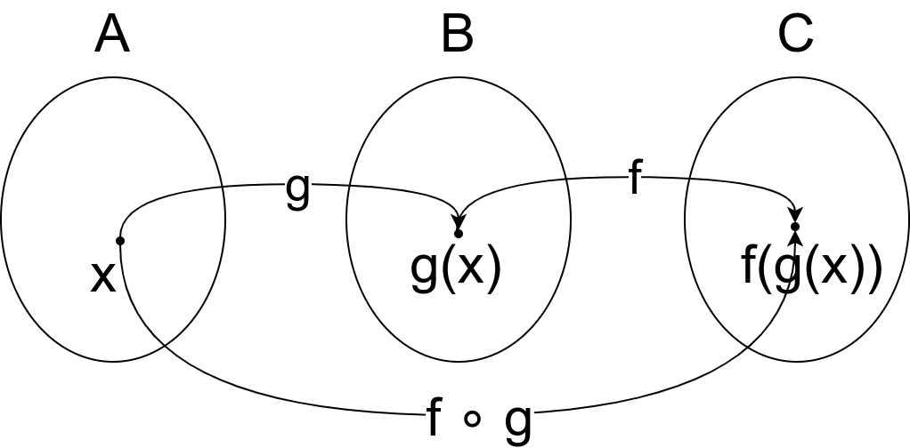

Функционална парадигма¶
Покушајмо да илуструјемо основне идеје функционалне парадигме кроз један једноставан пример. Пример је веома једноставан и његово императивно решење није наоричито компликовано. Ипак, кроз низ међукорака полазни програм ћемо трансформисати, да бисмо на крају приказали решење које је потпуно у духу функционалног програмирања, користи богату библиотечку подршку (библиотеке Linq) и које ће бити јасније и читљивије од полазног императивног, а самим тим вероватно и једноставније (наравно, када усвојите основне концепте функционалног програмирања). Наравно, исти принципи који ће бити изложени на овом веома једноставном примеру се примењују и при решавању комплекснијих задатака и њихова предност тада постаје још јаче изражена.
Исти задатак ће бити решен императивно, у језику C#, затим функционално, у језику C# коришћењем библиотеке Linq и на крају у функционалном језику Haskell. Циљ нам је, дакле, да прикажемо како се стил програмирања карактеристичан за функционалне програмске језике (попут језика Haskell) присутан и у нашироко популарним индустријским језицима, какав је C# (за њега слободно можемо рећи да је мултипарадигматичан).
Решење у језику C#¶
Полазни проблем¶
Напишимо програм за одређивање збира квадрата непарних цифара унетог позитивног природног броја. То је задатак какав сте сигурно сретали у првом разреду и сигурно бисте га коришћењем императивне парадигме решили на следећи начин.
using System;
class Program
{
static int ZbirKvadrataNeparnihCifara(int n)
{
int zbir = 0;
while (n > 0)
{
int cifra = n % 10;
if (cifra % 2 != 0)
zbir += cifra * cifra;
}
return zbir;
}
public static void Main(string[] args)
{
int n = int.Parse(Console.ReadLine());
Console.WriteLine(ZbirKvadrataNeparnihCifara(n));
}
}
Декомпозиција проблема¶
Размотримо да ли бисмо могли да идентификујемо појединачне алгоритме које смо употребили у овом решењу. Размислимо, да ли бисмо неки од њих, у складу са добром праксом процедуралног програмирања, могли да издвојимо у посебну функцију која би нам била корисна и у другим задацима? Прво, у решењу се користи поступак заснован на целобројном дељењу у којем се одређују једна по једна цифра датог броја (и то здесна налево). Тиме од датог броја добијамо серију његових цифара. Након тога издвајамо и шаљемо на даљу обраду само оне цифре које су непарне. Потом сваку од тих цифара квадрирамо. И на крају, рачунамо збир тако добијених квадрата. Разлагањем овог алгоритма на саставне делове, за улаз 12345 се добија следећа секвенца међурезултата.
12345 → [5, 4, 3, 2, 1] → [5, 3, 1] → [25, 9, 1] → 35.
Кључна идеја је да извршимо декомпозицију проблема, тј. да сложени алгоритам изразимо као композицију једноставнијих алгоритама. Хајде сада да напишемо кôд који ради на овај начин.
using System;
using System.Collections.Generic;
class Program
{
static List<int> Cifre(int n)
{
var rezultat = new List<int>();
while (n > 0)
{
rezultat.Add(n % 10);
n /= 10;
}
return rezultat;
}
static List<int> IzdvojNeparneCifre(List<int> cifre)
{
var rezultat = new List<int>();
foreach (int cifra in cifre)
if (cifra % 2 != 0)
rezultat.Add(cifra);
return rezultat;
}
static List<int> kvadrirajCifre(List<int> cifre)
{
var rezultat = new List<int>();
foreach (int cifra in cifre)
rezultat.Add(cifra * cifra);
return rezultat;
}
static int Saberi(List<int> brojevi)
{
int zbir = 0;
foreach (int broj in brojevi)
zbir += broj;
return zbir;
}
static int ZbirKvadrataNeparnihCifara(int n)
{
return Saberi(KvadrirajCifre(IzdvojNeparneCifre(Cifre(n))));
}
public static void Main(string[] args)
{
int n = int.Parse(Console.ReadLine());
Console.WriteLine(ZbirKvadrataNeparnihCifara(n));
}
}
Програм је много дужи, али је свака појединачна функција доста једноставнија него она у полазном решењу и исказује само један појединачан алгоритам. Можемо рећи да је овај програм знатно модуларнији него полазни, који је прилично монолитан. Добра декомпозиција и модуларност нам доприносе разумљивости кода и лакшој имплементацији, јер се фокусирамо на мање и једноставније проблеме (једноставније је написати функцију за сабирање листе бројева, него полазну функцију која ради неколико задатака од једном). Такође, доприноси и поновној искористивости кода, јер исту функцију можемо употребити и у другим програмима (лако је разумети да су за разлику од полазне функције која сабира квадрате непарних цифара броја и функција која издваја појединачне цифре и функција која сабира елементе листе бројева корисна и у другим програмима програмима).

Суштина функционалног програмирања долази у изражавању свих израчунавања у облику већег броја мањих функција, по могућности стандардног облика и проналажењу начина да те функције компонујемо тако да добијемо комплексније функције које изражавају решења нашег проблема. Стил разбијања проблема на потпроблеме и њиховог решења на композицију једноставнијих блокова присутан је и на другим местима у рачунарству. Током 1960их година направљен је оперативни систем UNIX, а принципи које је он увео се и данас користе (пре свега на оперативном систему Linux, али и у командној линији система Windows постоји слична функционалност). Основу UNIX филозофије представља колекција једноставних програма који раде јасно дефинисане задатке, чијом се композицијом остварује решавање сложенијих задатака.
Write programs that do one thing and do it well.
Write programs to work together.
Write programs to handle text streams, because that is a universal interface.
Композиција се остварује компоновањем програма. На пример,
cat datumi.txt | egrep “januar” | sort -n | uniq
Овим излиставамо датотеку datumi.txt затим одређујемо све њене
линије које садрже реч januar, сортирамо их и на крају
елиминишемо дупликате. Оператор | (чита се пајп) изражава
композицију тако што излаз свог првог аргумента усмерава на улаз
свог другог аргумента.
Рецимо да датотека datumi.txt садржи следећи текст:
4. januar 2017.
1. januar 1993.
13. jul 2008.
17. februar 2023.
4. januar 2017.
19. decembar 2005.
Команда cat чита садржај те датотеке и исписује га на свој
стандардни излаз. Када бисмо издали команду cat datumi.txt овај
садржај би се појавио на екрану. Команда egrep чита линију по
линију и издваја оне које садрже дату реч (или дати регуларни
израз). Команда cat datumi.txt | egrep "januar" шаље излаз
команде cat тј. садржај наше датотеке, на улаз команде
egrep, која затим филтрира линије и исписује на свој излаз само
оне које садрже реч januar.
4. januar 2017.
1. januar 1993.
4. januar 2017.
Новом применом оператора | овај излаз се уместо да се прикаже
на екрану преусмерава на улаз наредне команде, sort -n, која
сортира линије. Параметар -n служи да би се сортирање извршило
нумерички, а не лексикографски. Након сортирања добија се
1. januar 1993.
4. januar 2017.
4. januar 2017.
На крају, овај се излаз предаје команди uniq која елиминише
дупликате и која на екран исписује
1. januar 1993.
4. januar 2017.
Дакле, можемо да кажемо да функционално програмирање и UNIX деле исту филозофију композионалности једноставних целина која се током година показала веома успешном. Кључни моменат је то што је имплементација пајп оператора (тј. композиције) таква да се међурезултати не материјализују цели у меморији, већ се након сваке обрађене линије од стране првог програма резултат обраде одмах прослеђује на улаз другог програма, избегавајући да се цео излаз програма истовремено чува у меморији. Ово је веома важна идеја, која се користи и у функционалном програмирању и сада ћемо је дубље размотрити.
Лењост¶
Уз све његове предности, претходно решење не можемо сматрати
прихватљивим. Свако компоновање две функције подразумевало је да прва
функција свој резултат врати другој, која онда тај резултат преузима
као свој улазни параметар. Током декомпоновања проблема на
једноставније, већина међурезултата је заправо представљала неке
серије бројева и у претходном решењу су те серије бројева представљене
листама, што значи да је током извршавања претходног алгоритма
креирано неколико листи, чији су сви елементи истовремено заузимали
меморију. У случају кратких серија, као у овом примеру, то није
критично, али можемо лако замислити ситуације у којима се ради са
серијама од неколико десетина, па и стотина хиљада елемената и јасно
је да је тада цена коју плаћамо зарад лепе декомпозиције програма
превелика. То је један од разлога зашто се у класичним програмским
језицима декомпозиција обично не ради до краја и зашто су кораци који
се програмирају обично крупни (цео овај задатак би у класичном
програмирању по правилу био имплементиран у облику једне функције, као
у нашем почетном решењу), задржавајући се на нижем степену
модуларности. Да ли постоји начин да овај проблем превазиђемо? Решење
долази у облику лењог израчунавања. Наиме, функције не морају да
комуницирају преко листа, већ је могуће да употребимо лење токове о
којима је било речи у курсу објектно-оријентисаног програмирања у
језику C#. Подсетимо се, лењи ток представљамо преко интерфејса
IEnumerable, а градимо га најједноставније наредбом yield
return која узрокује да се извршавање функције суспендује и настави
тек када је позиваоцу потребан наредни елемент (не извршава се цела
функција одједном, већ само по потреби и зато кажемо да се она
извршава лењо).
using System;
using System.Collections.Generic;
class Program
{
static IEnumerable<int> Cifre(int n)
{
while (n > 0)
{
yield return n % 10;
n /= 10;
}
}
static IEnumerable<int> IzdvojNeparneCifre(IEnumerable<int> cifre)
{
foreach (int cifra in cifre)
if (cifra % 2 != 0)
yield return cifra;
}
static IEnumerable<int> kvadrirajCifre(IEnumerable<int> cifre)
{
foreach (int cifra in cifre)
yield return cifra * cifra;
}
static int Saberi(IEnumerable<int> brojevi)
{
int zbir = 0;
foreach (int broj in brojevi)
zbir += broj;
return zbir;
}
static int ZbirKvadrataNeparnihCifara(int n)
{
return Saberi(KvadrirajCifre(IzdvojNeparneCifre(Cifre(n))));
}
static static void Main(string[] args)
{
int n = int.Parse(Console.ReadLine());
Console.WriteLine(ZbirKvadrataNeparnihCifara(n));
}
}
Лењост нам доноси много боље решење од претходног и омогућава да
декомпозицију извршимо без меморијских и временских неефикасности које
би нам суштински спречиле декомпозицију у језицима у којима лењост
није подржана (покушајте да направите функцију која враћа листу од
милион елемената и лењи ток од милион елемената, саберите елементе
резултата и упоредите меморију коју та два програма заузимају током
извршавања). Иако у претходном програму радимо са токовима које
замишљамо као серије (низове, листе) цифара, захваљујући лењости, оне
се не материјализују и ниједан од међурезултата није интегрално
присутан у меморији. Сваки наредни елемент серије се израчунава само у
тренутку када функција позивалац затражи наредни елемент (у склопу
своје петље foreach), при чему је организација таква да када нам
наредни елемент затреба, претходни елемент обично више није
потребан. Јасно је да имплементација лењости носи са собом додатне
захтеве (потребно је некако запамтити где се стало са извршавањем
сваке функције која је суспендована наредбом yield return) и то
носи са собом неку цену. Међутим, у већини случајева та цена неће бити
таква да угрожава декомпозицију на мање модуле, за разлику од
сценарија без лењости у коме је јасно да су пенали које плаћамо
превелики и да они суштински заустављају декомпозицију,
тј. модуларизацију.
Лењост, генерално, подразумева да се вредност неког израза израчунава само када је то заиста неопходно. На пример, логички оператори && и || се израчунавају лењо: када је први операнд такав да се на основу њега може закључити вредност целог израза, вредност другог операнда се не израчунава.
Помало изненађујуће, лењост омогућава да се у програмима користе бесконачне колекције података (на пример, листа свих природних или листа свих простих бројева). Наравно, оне се не могу сместити у меморију рачунара, но лење колекције се ионако никада не смештају целе у меморију. Може се дефинисати функција која враћа један по један елемент такве колекције и онда се њеним узастопним позивима итерирати кроз елементе такве колекције. Наравно, да би се прошло кроз бесконачну колекцију потребно је бесконачно времена, тако да се на овај начин, да цитирамо чувеног Чарсла Бебиџа, бесконачност простора преводи у бесконачност времена.
Размотримо један пример. Колацова секвенца се дефинише на следећи начин. Почетни елемент може бити произвољни природни број, а наредни елемент се одређује на основу текућег применом следећих правила:
ако је текући елемент \(n\) паран, наредни број једнак је \(\frac{n}{2}\);
ако је текући елемент \(n\) непаран, наредни број једнак је \(3n+1\).
На пример, кренувши од броја 3 добија се низ 3, 10, 5, 16, 8, 4, 2, 1, 4, 2, 1, 4, 2, 1, …
Размотримо следећу имплементацију функције која враћа (бесконачну) серију Колацових бројева.
using System;
using System.Collections.Generic;
class Program {
static IEnumerable<ulong> Collatz(ulong n)
{
while (true)
{
yield return n;
if (n % 2 == 0)
n = n / 2;
else
n = 3 * n + 1;
}
}
static void Main()
{
ulong n = ulong.Parse(Console.ReadLine());
foreach (ulong x in Collatz(n))
Console.WriteLine(x);
}
Програм се никада не зауставља и примећујемо да после неколико почетних бројева креће да стално исписује 1, 4, 2, 1, 4, 2, …
Ако желимо да испишемо само првих неколико елемената секвенце
можемо или прекинути петљу у функцији Main после одређеног
корака или можемо употребити методу Take библиотеке Linq па
употребити петљу foreach (ulong x in Collatz(n).Take(k)) којом
бисмо исписали првих k елемената. Пошто секвенца постаје
неинтересантна након што се појави прва јединица могли бисмо у
функцији Collatz, која је генерише, можемо додати прекид петље
након што је враћен елемент 1.
static IEnumerable<ulong> Collatz(ulong n)
{
while (true)
{
yield return n;
if (n == 1)
break;
else if (n % 2 == 0)
n = n / 2;
else
n = 3 * n + 1;
}
}
На овај начин делује да ће колекција која се овом функцијом враћа
увек бити коначна. Међутим, то не знамо. Наиме, нико до сада није
успео нити да докаже нити да оповргне да ће се за било који избор
почетне вредности n заиста некад стићи до вредности 1 и да ће
се набрајање зауставити. Овај проблем је чувен по томе што се
формулише изузетно једноставно, а и даље га нико није решио. Дакле,
без обзира на то што смо додали прекид петље и даље постоји
теоријска могућност да ће се за неко n добити бесконачна
колекција. Наравно, ова имплементација је наивна јер се користи тип
ulong који је ограничен, па може доћи до прекорачења, међутим,
није је тешко поправити је тако што би се користили неограничени
цели бројеви (на пример, тип BigInteger).
Апстракција и функције вишег реда¶
Решење које смо написали је лепо и довољно ефикасно. Декомпозиција је омогућила да се сваки алгоритам појединачно имплементира и свака од ових функција се једноставније разуме него полазна сложена функција. Ипак, главни добитак ће бити ако успемо да ове функције ставимо у библиотеку и употребимо их у различитим контекстима. Кључни проблем у овоме је то што оваквих малих, корисних функција има заиста прегршт. Ако бисмо у библиотеци имали функцију која квадрира све цифре у некој серији, зашто не бисмо имали и функцију која израчунава њихове кубове? Ако имамо функцију која издваја све непарне цифре, зашто не бисмо имали и ону која издваја све парне цифре или све оне дељиве са три? Зашто не бисмо имали функцију која из листе бројева издваја све оне који су негативни или све оне који су потпуни квадрати? Таква библиотека би била превелика и јасно је да бисмо увек наишли на неки сценарио за који у библиотеци не бисмо нашли решење. Потребно је да направимо одређену апстракцију. Размотримо шта би се разликовало код наше функције која издваја непарне бројеве и функције која би издвајала негативне бројеве из неке серије (лењог тока).
static IEnumerable<int> IzdvojNeparne(IEnumerable<int> brojevi)
{
foreach (int broj in brojevi)
if (broj % 2 != 0)
yield return broj;
}
static IEnumerable<int> IzdvojNegativne(IEnumerable<int> brojevi)
{
foreach (int broj in brojevi)
if (broj < 0)
yield return broj;
}
Примећујемо да се разликује само услов наредбе if. Да ли постоји
начин да тај услов проследимо некако функцији као параметар? На основу
онога што смо до сада користили, не постоји (осим да евентуално
направимо неки објекат у којем се методом представља услов који треба
проверити). C# нам пружа боље решење од тога. Функцији је као
параметар могуће проследити другу функцију! Када то урадимо, добијамо
функцију вишег реда или функционал. Тај концепт вам сигурно
није стран. Извод у математици је функционал који прими једну
функцију, а врати другу функцију. Тип функције се у језику C# дефинише
помоћу Func<>. На пример, тип Func<int, bool> означава тип
функције која прима један аргуемнт типа int, а враћа резултат типа
bool. Дакле, уместо гомиле појединачних функција које издвајају
елементе из серије, можемо направити генерички функционал који издваја
елементе који задовољавају дати услов, при чему се тај услов наводи
као параметар у облику функције која прима int и враћа bool
тј. као податак типа Func<int, bool>.
static IEnumerable<int> Izdvoj(IEnumerable<int> brojevi,
Func<int, bool> uslov)
{
foreach (int broj in brojevi)
if (uslov(broj))
yield return broj;
}
Слично, функција која је квадрирала сваки елемент серије се може једноставно апстраховати до функционала који би примењивао задату функцију која слика int у int на сваки елемент серије.
static IEnumerable<int> Preslikaj(IEnumerable<int> brojevi,
Func<int, int> f)
{
foreach (int broj in brojevi)
yield return f(broj);
}
У оваквој варијанти наш програм изгледа овако.
using System;
using System.Collections.Generic;
class Program
{
static IEnumerable<int> Cifre(int n)
{
while (n > 0)
{
yield return n % 10;
n /= 10;
}
}
static IEnumerable<int> Izdvoj(IEnumerable<int> brojevi,
Func<int, bool> uslov)
{
foreach (int broj in brojevi)
if (uslov(broj))
yield return broj;
}
static IEnumerable<int> Preslikaj(IEnumerable<int> brojevi,
Func<int, int> f)
{
foreach (int broj in brojevi)
yield return f(broj);
}
static int Saberi(IEnumerable<int> brojevi)
{
int zbir = 0;
foreach (int broj in brojevi)
zbir += broj;
return zbir;
}
static bool neparan (int broj)
{
return broj % 2 != 0;
}
static int kvadrat(int broj)
{
return broj * broj;
}
static int ZbirKvadrataNeparnihCifara(int n)
{
return Saberi(Preslikaj(Izdvoj(Cifre(n), neparan), kvadrat));
}
static static void Main(string[] args)
{
int n = int.Parse(Console.ReadLine());
Console.WriteLine(ZbirKvadrataNeparnihCifara(n));
}
}
Функције Izdvoj и Preslikaj су већ прилично опште, употребљиве
у разним програмима и имало би смисла убацити их у библиотеку. Остаје
проблем то што раде само над токовима типа int. Међутим, то би се
лако дало уопштити коришћењем параметарског полиморфизма и генеричких
функција о којима је било речи у курсу објектно-оријентисаног
програмирања у језику C#, тако да се сада тиме нећемо бавити. Оно што
је било помало неконформно у претходном решењу је то што смо морали да
дефинишемо посебне функције neparan и kvadrat. Да би се
избегло прављење таквих једнократних функција, на располагању нам
стоје анонимне функције, тј. ламбда–изрази.
static int ZbirKvadrataNeparnihCifara(int n)
{
return Saberi(Preslikaj(Izdvoj(Cifre(n), x => x % 2 != 0), x => x * x));
}
Израз x => x * x представља функцију која прима број x, а
враћа његов квадрат. Приметимо да није потребно да наведемо тип, већ
га компилатор одређује из контекста (врши се дедукција типова, слично
као што је био случај са var).
За језике које подржавају да се функције додељују променљивама, шаљу као аргументи другим функцијама, враћају као њихови резултати и слично, кажемо да су функције „грађани првог реда” и да су функцијски типови равноправним свим другим типовима (бројевима, низовима, …). Дакле, у функционалном програмирању функције се могу користити као подаци!
Библиотека Linq¶
Ако упоредимо добијену верзију програма са почетном, императивном, и
даље се с правом може замерити да је добијено решење доста
компликованије од полазног, јер су све функције имплементиране ручно.
Програм постаје много једноставнији када се уместо ручне
имплементације функција употреби њихова библиотечка имплементације.
Библиотека језика C# која пружа функционалност функционала Izdvoj
и Preslikaj и која подршку за функционални стил програмирања у том
језику је библиотека Linq. Она је део стандардне библиотеке језика
C# и није је потребно посебно инсталирати.
Библиотека Language Integrated Query (LINQ) је интегрални део развојног оквира .NET и језика C#, која омогућава програмерима да изражавају упите над различитим изворима података, као што су колекције објеката, базе података, XML документи, и други, користећи декларативан приступ. LINQ омогућава ефикасан рад са подацима, филтрирање, пресликавање, груписање, пројектовање и спајање података, чиме олакшава развој апликација и побољшава читљивост кода.
Метода Where пружа исту функционалност као наша функција
Izdvoj (издваја елементе на основу датог услова), метода
Select пружа исту функционалност као наша функција Preslikaj
(пресликава елементе применом дате функције), док метода Sum пружа
исту функционалност као наша функција Saberi (израчунава збир свих
елемената). Све три су методе проширења над IEnumerable. Тиме
долазимо до финалне C# верзије нашег програма. Имена Select и
Where долазе од везе библиотеке Linq и база података, али се том
везом сада нећемо бавити.
using System;
using System.Collections.Generic;
using System.Linq;
class Program
{
static IEnumerable<int> Cifre(int n)
{
while (n > 0)
{
yield return n % 10;
n /= 10;
}
}
static int ZbirKvadrataNeparnihCifara(int n)
{
return Cifre(n).Where(x => x % 2 != 0).Select(x => x * x).Sum();
}
static static void Main(string[] args)
{
int n = int.Parse(Console.ReadLine());
Console.WriteLine(ZbirKvadrataNeparnihCifara(n));
}
}
Иако није написан у функционалном програмском језику, овај програм је написан у функционалном програмском стилу. Резимирајмо основе концепте које смо кроз овај једноставан пример упознали:
Уместо једног монолитног алгоритма, проблем је решен тако што је алгоритам разложен на низ веома елементарних корака који се сукцесивно примењују (у овом пример то су били изградња низа цифара броја, издвајање елемената низа који задовољавају неко дато својство, пресликавање сваког елемента низа применом дате функције и сабирање свих елемената низа).
Већину тих једноставних алгоритамских корака није било потребно ручно имплементирати, јер постоји њихова библиотечка имплементација.
Да би библиотечке имплементације биле довољно опште, оне су параметризоване помоћу функција, које им се предају приликом позива (при чему је врло удобно за то користити синтаксу анонимних функција).
Појединачни алгоритамски кораци примају и враћају серије података. Ако се те серије реализују помоћу лењих колекција уместо класичних низова или листа података, елементи се не чувају истовремено у меморији и добијају се ефикаснији програми (пре свега меморијски ефикаснији).
Велики број карактеристика функционалних језика је уграђен у савремене програмске језике какви су и C#, Python, па у некој мери и C++ и Java (у овом примеру смо користили лењост, функције вишег реда, анонимне функције). Савремени трендови у свету програмирања управо су на тој линији – коришћење функционалног приступа у класичним програмским језицима. Ипак, постоје и класични, чисти функционални програмски језици и у наставку овог курса ћемо упознати језик Haskell, који је типични представник чистог функционалног програмског језика.
Решење у језику Haskell¶
Размотримо сада како се претходни пример може испрограмирати у програмском језику Haskell, којим ћемо се детаљније бавити у наставку овог курса. Циљ овог поглавља је само да повучемо паралелу и приметимо велику сличност између концепата које смо упознали у претходном решењу у језику C# са решењем у чисто функционалном језику. Ово је прилика да се на веома једноставном, али илустративном примеру упознамо са неким основим елементима језика Haskell. У овом трентуку се од вас очекује само да пробате да разумете написани кôд, а не да можете самостално да пишете програме у овом програмском језику. У наредним поглављимо ћемо веома постепено уводити овај програмски језик, са пуно примера и задатака и тада ће се од вас очекивати и да кренете да у њему самостално програмирате. У овој фази чак можете и да прескочите читање решења у овом програмском језику, можете прочитати наредне лекције решавајући тамо задате задатке, а затим се на крају вратити на овај пример.
Једно решење претходног задатка у језику Haskell је следеће.
cifre :: Int -> [Int]
cifre 0 = []
cifre n = (n `mod` 10) : cifre (n `div` 10)
zbirKvadrataNeparnihCifara :: Int -> Int
zbirKvadrataNeparnihCifara n =
sum (map (\x -> x * x) (filter (\ x -> x `mod` 2 /= 0) (cifre n)))
Видећемо да је, осим синтаксичких разлика, овај програм у свом духу прилично сличан програму који смо написали у језику C#.
Анотације типова¶
Претходни програм садржи дефиницију две функције: cifre и
zbirKvadrataNeparnihCifara. Линије cifre :: Int -> [Int] и
zbirKvadrataNeparnihCifara :: Int -> Int одговарају декларацијама
функција. Прва, на пример, каже да је cifre функција која прима
Int а враћа листу података типа Int (податак типа [Int]),
а друга да је zbirKvadrataNeparnihCifara функција која прима
Int и враћа Int. Занимљиво, ове анотације типова су потпуно
опционе. Чак и да их не наведемо, језик Haskell има механизам
дедукције типова и он ће, на основу дефиниција које следе, закључити
ког типа су ове функције (могуће је да чак закључи и општије типове
него ове које смо навели, јер се, на пример, збир може примењивати на
листу било којих нумеричких елемената, а не само елемената типа
Int).
Рекурзивне дефиниције¶
Прво је дефинисана функција која на основу броја одређује листу његових цифара. Примећујете, наравно, коришћена је рекурзија о којој смо већ много говорили у другом и трећем разреду. Наиме, функционални програмски језици не подржавају измену вредности променљивих, па самим тим итерацију није могуће остварити (свака петља се заснива на томе да се током њеног извршавања мења вредност неке променљиве).
За број 0 резултат је празна листа означена са [] (ово нам служи
као излаз из рекурзије, а коректно је јер је у тексту задатка
претпостављено да је број увек позитиван).
За бројеве различите од нула, то је листа која се добије тако што се
остатак при дељењу са 10 дода на почетак листе која се добије када се
одреди листа цифара целобројног количника броја подељеног
са 10. Додавање појединачног броја на почетак листе остварено је
помоћу оператора : (на пример, 5 : [3, 2, 4] даје листу
[5, 3, 2, 4]). Операторе mod и div смо писали инфиксно, и да
бисмо могли да их користимо инфиксно морали смо да их наведемо у
оквиру ових необичних наводника (mod 12 5 је исто што и
12 `mod` 5, представља остатак при дељењу броја 12
бројем 5 и вредност му је 2). Примећујете да се позиви функција пишу
без заграда (уместо cifre(n), пишемо cifre n, уместо mod(12, 5),
пишемо mod 12 5). Ово ће вас у почетку сигурно прилично
збуњивати, али када се навикнете, може вам се десити да увидите
предности оваквог записа и да се можда чак и запитате зашто
математичари не усвоје овакву нотацију. Више детаља о синтакси ћемо,
наравно, дати у наредним поглављима.
Поклапање шаблона¶
Приметимо да смо дефиниције обе функције (cifre и
zbirNeparnihCifaraBroja) дате помоћу математичких једнакости. Веза
функционалног програмирања и математике је веома дубока и о њој ћемо
интензивно причати у наставку курса. У првом случају је примењена
техника која се зове поклапање шаблона (енг. pattern
matching).
cifre 0 = []
cifre n = (n `mod` 10) : cifre (n `div` 10)
Наиме, приликом израчунавања функције cifre, редом се проверавају
наведене једнакости и ако се аргумент може уклопити у шаблон дат првом
левом страном (у овом случају то је cifre 0), примењиваће се та
дефиниција, а ако се не може уклопити, онда ће се прећи на другу (у
овом случају то је cifre n). Зато се друга једнакост односи само
на случај када је параметар различит од нуле, без потребе да се то
експлицитно нагласи. Уместо овога могли смо користити гранање (што би
више одговарало рекурзивној дефиницији у језику C#).
cifre n = if n == 0 then [] else (n `mod` 10) : cifre (n `div` 10)
Оператор if-then-else прави условни израз и одговара оператору ?:
у језику C# (а не наредби if-else). Сагласићете се да је решење са
уклапањем шаблона обично елегантније.
Лењост¶
У C# решењу истакли смо зашто нам је веома важно да функција не враћа
целу листу одједном, већ да резултат даје у облику лењог тока. Haskell
је језик који је по својој дефиницији лењ и код њега ће се управо
ствари одвијати онако како смо у језику C# моделовали помоћу
IEnumerable и yield return. Дакле, у језику Haskell не морамо
да бринемо да ће се компоновањем функција које раде над листама добити
неефикасан програми.
И у језику Haskell је могуће дефинисати бесконачне колекције. Рекурзивна функција којом се израчунава Колацова секвенца (за коју заправо не знамо да ли увек враћа коначну или некад враћа бесконачну секвенцу) се може дефинисати на следећи начин.
collatz :: Integer -> [Integer]
collatz 1 = [1]
collatz n = if n `mod` 2 == 0
then n : collatz (n `div` 2)
else n : collatz (3*n + 1)
Првих 10 елемената секвенце која почиње од броја 100 можемо добити
изразом take 10 (collatz 100) (функцијом take се издвајају
почетни елементи листе).
Функција sum, функционали map и filter и ламбда изрази¶
Размотримо сада израз помоћу којег је дефинисана функција
zbirNeparnihCifaraBroja.
sum (map (\x -> x * x) (filter (\ x -> x `mod` 2 /= 0) (cifre n)))
У њему се користе библиотечке функције sum, map и filter.
Функција
sum, очекивано, израчунава збир елемената дате листе.Функционал
mapодговара нашемPreslikaj, тј. Linq-овомSelect.Функционал
filterодговара нашемIzdvoj, тј. Linq-овомWhere.
Анонимне функције се записују помоћу ламбда–израза, који веома
личе на оне у језику C#, једино што морају да почну карактером \
(који одговара грчком слову ламбда λ, додуше са једном поломљеном
ногом) и што се уместо => користи ->.
Функција квадрирања се означава ламбда-изразом
\ x -> x * x.Функција која проверава да ли је број паран ламбда изразом
x -> x `mod` 2 /= 0.
Дакле, у наведеном изразу, прво се коришћењем наше функције cifre
одређују цифре броја, затим се функцијом
filter (x -> x `mod` 2 /= 0) издвајају парне цифре,
затим се функцијом map (\x -> x * x) оне квадрирају и на крају се
функцијом sum добијени квадрати сабирају.
Теорију иза ламбда–израза као механизма за опис израчунавања дефинисао је Алонзо Черч још 1930-их година и она и данас представља теоријску основу функционалних програмских језика.
Компрехенсија¶
Пресликавање и филтрирање тј. функционали map и filter су
толико чести да су имплицитно присутни у математичкој
нотацији. Размотримо следеће решење истог задатка.
zbirKvadrataNeparnihCifara :: Int -> Int
zbirKvadrataNeparnihCifara n =
sum [x * x | x <- cifre n, x `mod` 2 /= 0]
Приметите колико се овде Haskell приближио традиционалној
математици. У овом решењу користили смо тзв. компрехенсију листа која
одговара скуповној компрехенсији из математике (довољно је замислити
да се уместо угластих користе витичасте заграде, а да се уместо
симбола <- користи ∈). Дакле,
map f lможемо обележити са[f x | x <- l], што одговара изразу \(\{f(x)\,|\,x\in l\}\)filter P lможемо обележити са[x | x <- l, P x], што одговара изразу \(\{x\,|\,x\in l\,\wedge\,P(x)\}\), док[f x | x <- l, P x]означава композицију функционалаmapиfilterтј.map f (filter P l), што одговара изразу \(\{f(x)\,|\,x\in l\,\wedge\,P(x)\}\).
Композиција функција¶
Често се наглашава да је функционално програмирање тесно повезано са математиком. Урадимо сада још један корак карактеристичан у функционалном стилу програмирања али и математици, који ће нам омогућити да решење још мало лепше запишемо (са мање заграда и са јасније наглашеним осноним алгоритмима чијом се применом добија крајње решење). У самом старту смо кренули од тога да наш програм декомпонујемо, тј. да његово решење добијемо као композицију мањих елемената. Композионалност, тј. могућност добијања резултата компоновањем функција лежи у сржи програмирања, и функционални језици веома инсистирају на њој. Пошто су функције у језику Haskell чисте, тј. немају бочне ефекте, оне одговарају математичким функцијама и могу се компоновати на исти начин као што се компонују и функције у математици.
Појам композиције две функције \(f\) и \(g\) је у математици веома јасно и прецизно дефинисан. Ако је \(g\) функција која пресликава \(A\) у \(B\), и ако је \(f\) функција која пресликава \(B\) у \(C\), онда је \(f\circ g\) функција која пресликава \(A\) у \(C\) и дефинисана је помоћу \((f\circ g)(x) = f(g(x))\). У математици је сасвим природно дефинисати функцију помоћу \(h=f\circ g\), без помињања вредности у појединачним тачкама (за ово се каже да је нотација без тачака, тј. point-free style).
{kind=link}
Језик Haskell подржава директно оператор композиције функција (означен
је тачкицом .) и у њему је такође могуће користити нотацију без
тачака. Размотримо следећу дефиницију нашег текућег примера.
zbirKvadrataNeparnihCifara =
sum . map (\x -> x * x) . filter (\ x -> x `mod` 2 /= 0) . cifre
Функција zbirKvadrataNeparnihCifara је експлицитно дефинисана као
композиција 4 функције. У композицији се функције примењују здесна
налево.
Прво се примењује функција цифре која пресликава тип (скуп вредности)
Intу тип[Int]тј. број пресликава у листу његових цифара.Затим се примењује функција
filter (x -> x `mod` 2 /= 0)која пресликава тип[Int]у тип[Int]тј. листу цифара пресликава у листу њених непарних елемената.Затим се примењује функција
map (\x -> x * x)која пресликава тип[Int]у[Int]тј. која листу непарних цифара пресликава у листу њихових квадрата.На крају се примењује функција
sumкоја пресликава тип[Int]у типIntтј. која листу квадрата непарних цифара пресликава у њихов збир.
Каријеве функције¶
Нашу функцију смо сада експлицитно изразили као композицију четири
функције. Прва здесна је функција cifre која узима број и враћа
листу његових цифара и њен тип је Int -> [Int]. Међутим, код
друге, filter (x -> x `mod` 2 /= 0) треба мало да
застанемо и да се замислимо. Она филтрира задату листу тако што из ње
издваја све непарне елементе. Она дакле, прима листу бројева и враћа
листу бројева и тип јој је [Int] -> [Int].
Каква је веза ове конкретне функције филтрирања са библиотечком
функцијом filter? Јасно је да је она настала тако што је функција
filter конкретизована, фиксирањем њеног првог аргумента. Функција
filter је функција којој можемо да задамо два аргумента (услов
провере и листу) и тако добијемо листу оних елемената задате листе
који задовољавају задати услов провере. Гледано математички, то би
била функција две променљиве, која прима уређени пар аргумената и
враћа резултат. Међутим, у језику Haskell ствари стоје
другачије. Приметимо да синтакса језика уместо очекиваног позива
облика filter(uslov, lista) захтева навођење израза облика
filter uslov lista. На пример, вредност израза
filter (\ x -> x `mod` 2 /= 0) [1, 2, 3, 4, 5, 6]
је листа [1, 3, 5].
У изразу filter (x -> x `mod` 2 /= 0) смо функцији
filter задали само један аргумент (услов провере). На тај начин смо
добили функцију једне променљиве: функцију која прима листу и враћа
листу њених непарних елемената. Функцију filter је, дакле, могуће
парцијално применити задајући јој само први, уместо оба аргумента.
Оваква парцијална примена функција открива да у Haskell-у заправо не
постоје функције више аргумената, већ су оне представљене као функције
које пресликавају свој први аргумент у неку конкретнију функцију. Тип
функције filter је:
filter :: (a -> bool) -> [a] -> [a]
Овај тип се чита здесна налево:
filter :: (a -> bool) -> ([a] -> [a])
То значи да је (једини) аргумент функције filter функција типа
a -> bool (тј. услов који је моделован функцијом која пресликава
елементе неког типа a у тип bool), а повратна вредност јој је
функција типа [a] -> [a] тј. функција која прима листу елемената
типа a и враћа нову листу елемената типа a.
У изразу filter (x -> x `mod` 2 /= 0) функција
filter је примењена на аргумент (x -> x `mod` 2 /= 0),
чиме је добијена конкретна функција која слика листу у листу
издвајајући јој непарне цифре. То нам је добро дошло у претходном
примеру, јер смо такву функцију могли укључити у ланац композиције.
Када се функција filter примењује на два аргумента, примена се
врши слева надесно.
(filter (\ x -> x \`mod\` 2 /= 0)) [1, 2, 3, 4, 5, 6]
Дакле, прво се примењује функција filter типа
(a -> bool) -> ([a] -> [a]) на аргумент
(x -> x `mod` 2 /= 0) типа a -> bool, добија се конкретна
функција филтрирања типа [a] -> [a], а онда се она примењује на
конкретну листу типа [a], дајући конкретну листу типа [a] као резултат.
Овај начин предствљања функција више променљивих (као функције једне променљиве које враћају функције) назива се Каријевање (енг. currying) у част чувеног логичара Хаскела Карија (уосталом, и језик Haskell носи његово име).
Предности функционалне парадигме¶
Везе са математиком и формална верификација¶
Видели смо да се у програмима у императивним програмским језицима вредности променљивих мењају током извршавања програма. Зато је кључни појам за анализу програма стање, које је одређено тренутним вредностима променљивих. Извршавање функција зависи од стања и може да промени стање (функције могу да имају бочне ефекте). Зато функција позвана са истим аргументима у различитим тренуцима током извршавања програма може да врати различит резултат. Ово условљава да је редослед израчунавања вредности функција веома битан током извршавања програма и не може се тек тако мењати (што, на пример, отежава могућност паралелизације програма, и такође чини да резоновање о функцијама није могуће вршити независно од контекста у којем се оне позивају). Анализа коректности програма написаних у императивним програмским језицима је компликована и захтева посеван математички апарат.
Променљиве у функционалним језицима не мењају своју вредност током извршавања програма, што их чини веома блиским математичком појму променљивих. Пошто, се не користе променљиве којима се мења вредност током извршавања програма, израчунавање вредности израза не зависи од стања програма. Са друге стране, није могуће коришћење петљи, што функционалне програмске језике чини доста другачијим од импеартивних, у којима су петље основни механизам изражавања алгоритама (уместо петљи, користи се рекурзивно дефинисање функција, које опет има јасну математичку основу).
Функције које се разматрају у чистом функционалном програмирању у потпуности одговарају математичким функцијама (увек за исте улазе дају исте излазе – каже се да су чисте, референцијално транспаренте и да немају бочне ефекте). О оваквим се функцијама може формално резоновати применом класичних математичких техника, што је веома значајно у анализи кода и доказивању његове коректности.
Све наведено пружа могућност да се изврши верификација чистих функција и функционалних програма, тј. да се њихова коректност докаже применом уобичајених математичких метода (пре свега математичке индукције и једнакосног резоновања). Размотримо пример рекурзивне функције која израчунава степен датог броја.
stepen x 0 = 1
stepen x n = x * stepen x (n - 1)
Овај програм у потпуности одговара математичкој дефиницији:
Коректност рекурзивно дефинисаних функција се по правилу доказује математичком индукцијом.
Као базу индукције, потребно је доказати да функција израчунава коректан резултат када год врати резултат без вршења рекурзивног позива тј. доказати да су излази из рекурзије коректни.
Као индуктивна хипотеза претпоставља се да сваки рекурзивни позив враћа исправан резултат. Индуктивни корак онда захтева да се, под претпоставком да таква индуктивна хипотеза важи, докаже да функција враћа исправан резултата и у случајевима када су вршени рекурзивни позиви.
Покажимо ово на примеру функције stepen. Докажимо да функција за
сваки природан број \(n\) (укључујући и нулу) и сваки реалан број
\(x\) различит од нуле, исправно израчунава степен \(x^n\).
Базу чини случај \(n=0\), јер се тада врши излаз из рекурзије и враћа се вредност 1. Тај резултат је коректан јер знамо да је \(x^0=1\).
Када је \(n > 0\), рекурзивни позив који се врши је
stepen x (n-1)и као индуктивну хипотезу претпостављамо да он враћа исправну вредност \(x^{n-1}\) (приметимо да из \(n > 0\) следи \(n - 1 \geq 0\), па је рекурзивни позив извршен над вредностима које су у домену ове функције). На основу дефиниције видимо да је резултат функције у том случају вредностx * stepen x (n - 1). На основу индуктивне хипотезе знамо да је ово вредност \(x \cdot x^{n-1} = x^n\). Дакле, позивstepen x nвраћа вредност \(x^n\) и функцијаstepenје коректно дефинисана.
Нагласимо и да функционални језици какав је Haskell обично директно подржавају типове података за представљање неограничено великих бројева, па не постоји опасност од прекорачења, што је један од веома честих извора грешака у императивним и објектно-оријентисаним програмима. То може учинити рачунање мало споријим (мада и не мора, ако су вредности са којима се рачуна мале), али чини програме мање подложним грешкама, што је често важније.
Захваљујући томе што функције одговарају математичким функцијама, о
њима можемо резоновати коришћењем једнакости и алгебарских закона. На
пример, видели смо да функција map врши пресликавање серије
елемената применом дате функције. Пошто та функција нема споредних
ефеката, важи следећи алгебарски закон:
Наиме, ако све елементе серије пресликамо неком функцијом \(g\), па затим тако добијену серију пресликамо функцијом \(f\), добијамо исти ефекат као да смо полазну серију пресликали композицијом функција \(f \circ g\). Компилатор може, на пример, да употреби претходни алгебарски закон да оптимизује програм тако што ће уместо два узастопна пресликавања вршити само једно. Обратите пажњу на то да, када функције \(f\) и \(g\) не би биле чисте, тј. када би имале бочне ефекте, овај закон не би морао да важи (покушајте да нађете пример који то илуструје).
Када би се докази коректности писали на папиру, постојала би
опасност да они садрже грешке. Стога се верификација врши помоћу
специјалних софтверских алатки. Аутоматски доказивачи теорема
покушавају да докажу коректност софтвера тако што потпуно
самостално проналазе доказе теорема које говоре о коректности тог
софтвера. Они често не могу да докажу целокупну коректност, али
могу да докажу одсуство неких честих типова грешака (на пример, да
се не врши целобројно дељење нулом, да се null показивачи не
дереференцирају, да се не приступа елементима низа ван његових
граница и слично). Интерактивни доказивачи теорема проверавају
доказе које корисници записују (на специјализованим језицима),
користећи аутоматске доказиваче да самостално обраде једноставније
делове доказа. Интерактивни доказивачи теорема често користе
функционалне програмске језике.
Постоје значајни примери веома комплексног софтвера који је делимично или потпуно формално верификован. Поменимо неке најзначајније.
CompCert је компилатор за програмски језик C који је имплементиран у функционалном језику интерактивног доказивача Coq.
SEL4 је оперативни систем који је верификован у интерактивном доказивачу теорема Isabelle/HOL. Прво је верификована његова функционална имплементација у језику Haskell, а затим и имплементација у програмском језику C (што је захтевало много компликованије методе јер C није функционални језик).
Систем Event-B је употребљен за формалну верификацију линије 11 париском метроа, којом уместо људских возача управља софтвер.
Декларативност¶
На крају, када упоредимо ово решење са оним полазним, можемо приметити да смо након дивергенције у програм са много више линија кода заправо дошли до програма који је много краћи, али и разумљивији од полазног C# решења (ако вам се тако не чини, верујте да је то само зато што сте на императивни начин размишљања навикли и да ћете током овог полугодишта, променити мишљење). Нагласимо још једну важну особину овог решења. Приметимо блискост овог решења са самим текстом задатка (ако читамо редом, примећујемо речи „сума“, „квадрата“, „непарних“, „цифара броја“ и свака од тих речи редом одговара једној од наших функција у ланцу композиције). У нашем програму нисмо морали да објашњавамо ни како се сумира, ни како се издвајају цифре, ни како се пресликавају – захваљујући својој богатој библиотеци, језик је то сам урадио уместо нас. Дакле, програм је био много ближи опису самог проблема, него опису решења, док се полазно C# решење морало много приближити самом поступку израчунавања, тј. директном опису сваког корака у решавању овог проблема. Зато се за функционалне језике често каже да су много више декларативни него императивни (много више описујемо сам проблем, него процедуру његовог решавања). Наравно, то не ради увек (код одређивања цифара у запису броја рекурзивним дефиницијама смо директно описали процедуру и тај аспект овог програма није декларативан, већ процедуралан).
Паралелизација¶
На крају, рецимо и да изражавање програма у функционалном облику често може да допринесе паралелизацији. На пример и filter и map су такве функције да анализирају независно један по један елемент листе и веома једноставно се могу паралелизовати (нпр. један процесор обрађује први део дугачке листе, а други процесор други део). Захваљујући овоме, функционални стил програмирања је веома популаран у оквиру развоја паралелних и дистрибуираних система.
Један од веома важних разлога за рани успех компаније Google је систем за паралелно и дистрибуирано израчунавање назван Map/Reduce, који је инспирисан функционалним програмирањем.
Замислимо програм који треба да преброји појављивања неке кључне речи у огромном броју докумената (на пример, на веб-странама преузетим са целог веба). Јасно је да би то превише дуго трајало ако би се извршавало секвенцијално. Зато се тај посао паралелизује, тако што сваки процес добија одређени број веб-страна које треба да обради.
Прва идеја би могла да буде да сваки рачунар када наиђе на појављивање тражене речи увећа неки бројач појављивања који се налази у некој заједничкој, дељеној меморији. Међутим, такав приступ је проблематичан, јер је потребно обезбедити неки механизам закључавања који ће спречити да дође до грешке. Наиме увећање променљиве није атомичка операција и подразумева да се стара вредност прво прочита из меморије, па да се затим упише увећана вредност. Ако би између читања и уписа нове вредности променљиве неки други процес прочитао вредност променљиве, десило би се да се једно увећавање прескочи. Учили сте из оперативних система да се обезбеђивање таквих критчних секција врши закључавањем, али то решење је компликовано и неефикасно.
Много боља идеја је да се уместо коришћења дељене променљиве посао издели тако што ће сваки процес независно да преброји појављивања речи у својим документима, а онда ће се у другој фази сви добијени бројеви сабрати. Прво се, дакле, сваки скуп веб-страница пресликава (мапира) у број појављивања речи у том скупу, а затим се ти бројеви сабирају (редукују). Овај општи механизам се примењује за паралелизацију различитих задатака, при чему се они извршавају дистрибуирано, на великим кластерима. У првој фази се увек скуп веб страна мапира тако што се из њих извлаче неки помоћни подаци, који се затим у другој фази редукују да би се добио коначни резултат. Мапирање одговара функцији map коју смо већ срели, док се редукција врши функцијом која се у функционалним језицима назива често fold или reduce (видећемо да је сумирање типичан пример редукције и да се може лако реализовати функцијом fold).
Нагласимо још једном да пресликавање које се врши у првој фази мора да буде чисто, тј. без бочних ефеката. Заиста, како бисмо могли да верујемо у резултат претраге ако на хиљаде рачунара мапирамо упит који није имплементиран као чиста функција и како би могло да се гарантује да бочни ефекти нису нешто побрљали у резултату функције?
Задаци за самостални рад¶
Потражити на интернету податке о првом масивно паралелном рачунару који се звао Connection Machine (настао средином 1980их). Истражите зашто су се аутори одличили за LISP као језик у коме се тај рачунар програмирао? Потражите на Интернету Фејнманов алгоритам за рачунање логаритма на Connection Machine (Ричард Фејнман је чувени физичар, добитник Нобелове награде)?
Потражите на интернету информације о програмском језику Verse. Када је настао и чему је намењен? Ко је наручио овај језик? Ко је творац овог овог језика и које језике је он још конструисао?
Потражите на интернету информације о програмском језику Scala. Којој парадигми он припада? У каквој је вези овај језик са програмским језиком Java?